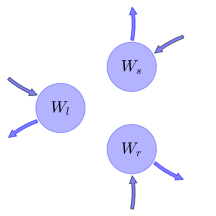

General Overview

This report is the result of the use of the Python 3.4 package Sympy (for symbolic mathematics), as means to translate published models to a common language. It was created by Verónika Ceballos-Núñez (Orcid ID: 0000-0002-0046-1160) on 11/8/2015, and was last modified on lm.
About the model
The model depicted in this document considers carbon allocation with a process based approach. It was originally described by Van Der Werf, Enserink, Smit, & Booij (1993).
Abstract
In this paper we model allocation of carbon and nitrogen to roots and leaves as a function of the nitrogen status of a plant. Under steady-state conditions, allocation of carbon and nitrogen to leaves is exponentially (positively) correlated with plant nitrogen concentration, whereas allocation to roots is correlated negatively, also in an exponential manner. Allocation functions derived under steady-state conditions are used to simulate biomass partitioning under non-steady-state nutrient conditions. Upon nitrogen deprivation, measured and simulated values are rather similar with time, suggesting that allocation functions derived under steady-state conditions also hold under non-steady-state conditions.
Space Scale
global
State Variables
The following table contains the available information regarding this section:
Information on State Variables
| \(W_{l}\) |
Dry weights of leaf blades |
- |
foliage |
| \(W_{s}\) |
Dry weights of leaf sheaths |
- |
foliage |
| \(W_{r}\) |
Dry weights of roots |
- |
fine_roots |
| \(N_{p}\) |
Nitrogen. Rate of uptake obeys to the following expression |
\(N_{p}=\sigma\cdot W_{r}\) |
- |
Additional Variables
The following table contains the available information regarding this section:
Information on Additional Variables
| \(C_{cl}\) |
Cabon contents of leaf blades |
variable |
| \(C_{cs}\) |
Cabon contents of leaf sheaths |
variable |
| \(C_{cr}\) |
Cabon contents of roots |
variable |
| \(r_{m}\) |
Amount of carbon lost per day in root respiration (maintenance) |
variable |
| \(c_{n u}\) |
Amounts of carbon lost per unit of nitrogen taken up |
variable |
| \(c_{g}\) |
Amounts of carbon lost per unit of root biomass |
variable |
| \(\sigma\) |
Rate of nitrogen uptake per unit of root weight |
parameter |
Photosynthetic Parameters
The following table contains the available information regarding this section:
Information on Photosynthetic Parameters
| \(\phi_{g}\) |
Rate of gross photosynthesis per unit of leaf weight |
GPP |
parameter |
Allocation Coefficients
The following table contains the available information regarding this section:
Information on Allocation Coefficients
| \(\alpha_{cl}\) |
part_foliage |
parameter |
| \(\alpha_{cs}\) |
part_wood |
parameter |
| \(\alpha_{cr}\) |
part_roots |
parameter |
Cycling Rates
The following table contains the available information regarding this section:
Information on Cycling Rates
| \(\gamma_{f}\) |
0000-0002-0046-1160 |
cyc_foliage |
parameter |
| \(\gamma_{r}\) |
0000-0002-0046-1160 |
cyc_roots |
parameter |
| \(\gamma_{w}\) |
0000-0002-0046-1160 |
cyc_wood |
parameter |
Respiration Rates
The following table contains the available information regarding this section:
Information on Respiration Rates
| \(Q_{l}\) |
Respiration rates per unit of leaf weight-variable formulated by us, for generalization purposes- |
0000-0002-0046-1160 |
- |
parameter |
| \(Q_{s}\) |
Respiration rates per unit of stem weight -variable formulated by us, for generalization purposes- |
0000-0002-0046-1160 |
- |
parameter |
| \(Q_{r}\) |
Respiration rates per unit of roots -variable formulated by us, for generalization purposes- |
0000-0002-0046-1160 |
\(Q_{r}=\frac{r_{m}+\sigma\cdot c_{n,u}}{1+\frac{c_{g}}{C_{cr}}}\) |
variable |
Components
The following table contains the available information regarding this section:
Information on Components
| \(x\) |
vector of states for vegetation |
\(x=\left[\begin{matrix}W_{l}\\W_{s}\\W_{r}\end{matrix}\right]\) |
state_vector |
| \(u\) |
scalar function of photosynthetic inputs |
\(u=\phi_{g}\) |
scalar_func_phot |
| \(c\) |
carbon contents per compartment |
\(c=\left[\begin{matrix}\frac{1}{C_{cl}} & 0 & 0\\0 &\frac{1}{C_{cs}} & 0\\0 & 0 &\frac{1}{C_{cr}}\end{matrix}\right]\) |
C_content |
| \(R\) |
vector of respiration rates |
\(R=\left[\begin{matrix}- Q_{l} & 0 & 0\\0 & - Q_{s} & 0\\0 & 0 & - Q_{r}\end{matrix}\right]\) |
resp_matrix |
| \(b\) |
vector of partitioning coefficients of photosynthetically fixed carbon |
\(b=\left[\begin{matrix}\alpha_{cl}\\\alpha_{cs}\\\frac{\alpha_{cr}}{1 +\frac{c_{g}}{C_{cr}}}\end{matrix}\right]\) |
part_coeff |
| \(A\) |
matrix of turnover (cycling) rates |
\(A=\left[\begin{matrix}-\gamma_{f} & 0 & 0\\0 & -\gamma_{r} & 0\\0 & 0 & -\gamma_{w}\end{matrix}\right]\) |
cyc_matrix |
| \(f_{v}\) |
the righthandside of the ode |
\(f_{v}=u\cdot x_{0, 0} c b + A c x + R c x\) |
state_vector_derivative |
Pool model representation
|
|
Flux description
|

Figure 1: Pool model representation
|
\(W_{l}: \alpha_{cl}\cdot\phi_{g}\)
\(W_{s}: \alpha_{cs}\cdot\phi_{g}\)
\(W_{r}: \frac{\alpha_{cr}\cdot\phi_{g}}{1 +\frac{c_{g}}{C_{cr}}}\)
Output fluxes
\(W_{l}: W_{l}\cdot\gamma_{f}\)
\(W_{s}: W_{s}\cdot\gamma_{r}\)
\(W_{r}: W_{r}\cdot\gamma_{w}\)
|
The right hand side of the ODE
\(\left[\begin{matrix}-\frac{Q_{l}}{C_{cl}}\cdot W_{l} +\frac{W_{l}}{C_{cl}}\cdot\alpha_{cl}\cdot\phi_{g} -\frac{W_{l}}{C_{cl}}\cdot\gamma_{f}\\-\frac{Q_{s}}{C_{cs}}\cdot W_{s} +\frac{W_{l}}{C_{cs}}\cdot\alpha_{cs}\cdot\phi_{g} -\frac{W_{s}}{C_{cs}}\cdot\gamma_{r}\\\frac{W_{l}\cdot\alpha_{cr}\cdot\phi_{g}}{C_{cr}\cdot\left(1 +\frac{c_{g}}{C_{cr}}\right)} -\frac{W_{r}}{C_{cr}}\cdot\gamma_{w} -\frac{W_{r}\cdot\left(c_{n u}\cdot\sigma + r_{m}\right)}{C_{cr}\cdot\left(1 +\frac{c_{g}}{C_{cr}}\right)}\end{matrix}\right]\)
The Jacobian (derivative of the ODE w.r.t. state variables)
\(\left[\begin{matrix}-\frac{Q_{l}}{C_{cl}} +\frac{\alpha_{cl}}{C_{cl}}\cdot\phi_{g} -\frac{\gamma_{f}}{C_{cl}} & 0 & 0\\\frac{\alpha_{cs}}{C_{cs}}\cdot\phi_{g} & -\frac{Q_{s}}{C_{cs}} -\frac{\gamma_{r}}{C_{cs}} & 0\\\frac{\alpha_{cr}\cdot\phi_{g}}{C_{cr}\cdot\left(1 +\frac{c_{g}}{C_{cr}}\right)} & 0 & -\frac{\gamma_{w}}{C_{cr}} -\frac{c_{n u}\cdot\sigma + r_{m}}{C_{cr}\cdot\left(1 +\frac{c_{g}}{C_{cr}}\right)}\end{matrix}\right]\)
References
Van Der Werf, A., Enserink, T., Smit, B., & Booij, R. (1993). Allocation of carbon and nitrogen as a function of the internal nitrogen status of a plant: Modelling allocation under non-steady-state situations. Plant and Soil, 155-156(1), 183–186. http://doi.org/10.1007/BF00025014